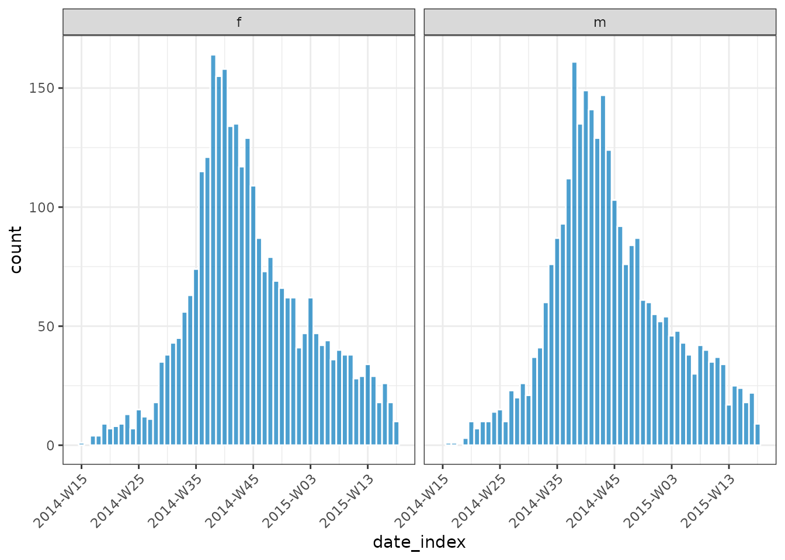
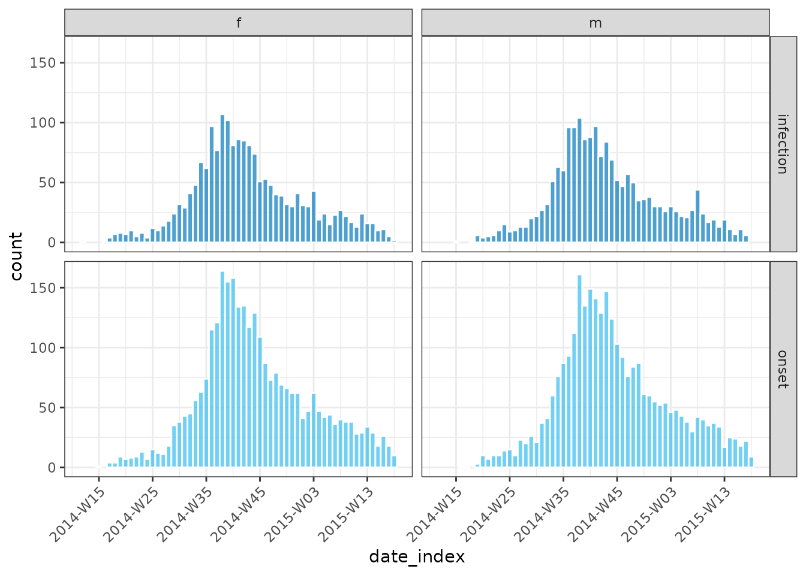

What does it do?
{incidence2} is an R package that implements functions to compute, handle and visualise incidence data. It aims to be intuitive to use for both interactive data exploration and as part of more robust outbreak analytic pipelines.
The package is based around objects of the namesake class,
<incidence2>. These objects are a data frame subclass
with some additional invariants. That is, an
<incidence2> object must:
have one column representing the date index (this does not need to be a
dateobject but must have an inherent ordering over time);have one column representing the count variable (i.e. what is being counted) and one variable representing the associated count;
have zero or more columns representing groups;
not have duplicated rows with regards to the date and group variables.
To create and work with <incidence2> objects we
provide a number of functions:
incidence(): for the construction of incidence objects from both linelists and pre-aggregated data sets.plot.incidence2(): generate simple plots with reasonable defaults.regroup(): regroup incidence from different groups into one global incidence time series.keep_first(),keep_last(): keep the rows corresponding to the first (or last) set of grouped dates (ordered by time) from an<incidence>object.keep_peaks(): keep the rows corresponding to the maximum count value for each grouping of an<incidence>object.complete_dates(): ensure every possible combination of date and groupings is represented with a count.cumulate(): calculate the cumulative incidence over time.print.incidence2()andsummary.incidence2()methods.as.data.frame.incidence2()conversion method.Accessor functions for accessing underlying variables:
get_date_index(),get_count_variable(),get_count_value(),get_groups(),get_count_value_name(),get_count_variable_name(),get_date_index_name()andget_group_names().
Usage
The following sections give an overview of the package utilising two different data sets. The first of these datasets comes from the {outbreaks} package and is a synthetic linelist generated from a simulated Ebola Virus Disease (EVD) outbreak. The second data set is available within {incidence2} and represents a pre-aggregated time-series of Covid cases, tests, hospitalisations, and deaths for UK regions that was obtained using the {covidregionaldata} package (extracted on 2021-06-03).
library(outbreaks) # for the underlying data
library(ggplot2) # For custom plotting later
library(incidence2)
#> Loading required package: grates
ebola <- ebola_sim_clean$linelist
str(ebola)
#> 'data.frame': 5829 obs. of 11 variables:
#> $ case_id : chr "d1fafd" "53371b" "f5c3d8" "6c286a" ...
#> $ generation : int 0 1 1 2 2 0 3 3 2 3 ...
#> $ date_of_infection : Date, format: NA "2014-04-09" ...
#> $ date_of_onset : Date, format: "2014-04-07" "2014-04-15" ...
#> $ date_of_hospitalisation: Date, format: "2014-04-17" "2014-04-20" ...
#> $ date_of_outcome : Date, format: "2014-04-19" NA ...
#> $ outcome : Factor w/ 2 levels "Death","Recover": NA NA 2 1 2 NA 2 1 2 1 ...
#> $ gender : Factor w/ 2 levels "f","m": 1 2 1 1 1 1 1 1 2 2 ...
#> $ hospital : Factor w/ 5 levels "Connaught Hospital",..: 2 1 3 NA 3 NA 1 4 3 5 ...
#> $ lon : num -13.2 -13.2 -13.2 -13.2 -13.2 ...
#> $ lat : num 8.47 8.46 8.48 8.46 8.45 ...
covid <- covidregionaldataUK
str(covid)
#> 'data.frame': 6370 obs. of 13 variables:
#> $ date : Date, format: "2020-01-30" "2020-01-30" ...
#> $ region : chr "East Midlands" "East of England" "England" "London" ...
#> $ region_code : chr "E12000004" "E12000006" "E92000001" "E12000007" ...
#> $ cases_new : num NA NA 2 NA NA NA NA NA NA NA ...
#> $ cases_total : num NA NA 2 NA NA NA NA NA NA NA ...
#> $ deaths_new : num NA NA NA NA NA NA NA NA NA NA ...
#> $ deaths_total : num NA NA NA NA NA NA NA NA NA NA ...
#> $ recovered_new : num NA NA NA NA NA NA NA NA NA NA ...
#> $ recovered_total: num NA NA NA NA NA NA NA NA NA NA ...
#> $ hosp_new : num NA NA NA NA NA NA NA NA NA NA ...
#> $ hosp_total : num NA NA NA NA NA NA NA NA NA NA ...
#> $ tested_new : num NA NA NA NA NA NA NA NA NA NA ...
#> $ tested_total : num NA NA NA NA NA NA NA NA NA NA ...Computing incidence from a linelist
To compute daily incidence we pass to incidence() a
linelist of observation data. This input should be in the form of a data
frame and we must also pass the name of a variable in the data that we
can use to index the input. Note that whilst we we refer to this index
as the date_index there is no restriction on it’s type,
save it needing represent the relative time of an observation (i.e. it
has an ordering).
daily <- incidence(ebola, date_index = "date_of_onset")
daily
#> # incidence: 367 x 3
#> # count vars: date_of_onset
#> date_index count_variable count
#> * <date> <chr> <int>
#> 1 2014-04-07 date_of_onset 1
#> 2 2014-04-15 date_of_onset 1
#> 3 2014-04-21 date_of_onset 2
#> 4 2014-04-25 date_of_onset 1
#> 5 2014-04-26 date_of_onset 1
#> 6 2014-04-27 date_of_onset 1
#> 7 2014-05-01 date_of_onset 2
#> 8 2014-05-03 date_of_onset 1
#> 9 2014-05-04 date_of_onset 1
#> 10 2014-05-05 date_of_onset 1
#> # ℹ 357 more rows
plot(daily)
The daily data is quite noisy, so we may want to pre group dates
prior to calculating the incidence. One way to do this is to utilise
functions from the {grates} package. Here
we use the as_isoweek() function to convert the ‘date of
onset’ to an isoweek (a week starting on a Monday) before calculating
the incidence incidence:
# isoweek incidence
weekly_ebola <- transform(ebola, date_of_onset = as_isoweek(date_of_onset))
inci <- incidence(weekly_ebola, date_index = "date_of_onset")
inci
#> # incidence: 56 x 3
#> # count vars: date_of_onset
#> date_index count_variable count
#> * <isowk> <chr> <int>
#> 1 2014-W15 date_of_onset 1
#> 2 2014-W16 date_of_onset 1
#> 3 2014-W17 date_of_onset 5
#> 4 2014-W18 date_of_onset 4
#> 5 2014-W19 date_of_onset 12
#> 6 2014-W20 date_of_onset 17
#> 7 2014-W21 date_of_onset 15
#> 8 2014-W22 date_of_onset 19
#> 9 2014-W23 date_of_onset 23
#> 10 2014-W24 date_of_onset 21
#> # ℹ 46 more rows
plot(inci, border_colour = "white")By grouping dates prior to calling incidence() it makes
it clear to future readers of your code (including yourself) which
transformations are being applied to your input data. This grouping,
however, is such a common and useful operation that we have chosen to
integrate much of {grates} functionality
directly in to incidence2. This integration is done via an
interval parameter in the incidence() call.
This can take values:
- day or daily (mapping to
<Date>objects); - week(s), isoweek(s) or weekly (mapping to
<grates_isoweek>); - epiweek(s) (mapping to
<grates_epiweek>); - month(s), yearmonth(s) or monthly
(
<grates_yearmonth>); - quarter(s), yearquarter(s) or quarterly
(
<grates_yearquarter>); - year(s) or yearly (
<grates_year>).
As an example, the following is equivalent to the inci
output above:
# isoweek incidence using the interval parameter
inci2 <- incidence(ebola, date_index = "date_of_onset", interval = "isoweek")
inci2
#> # incidence: 56 x 3
#> # count vars: date_of_onset
#> date_index count_variable count
#> * <isowk> <chr> <int>
#> 1 2014-W15 date_of_onset 1
#> 2 2014-W16 date_of_onset 1
#> 3 2014-W17 date_of_onset 5
#> 4 2014-W18 date_of_onset 4
#> 5 2014-W19 date_of_onset 12
#> 6 2014-W20 date_of_onset 17
#> 7 2014-W21 date_of_onset 15
#> 8 2014-W22 date_of_onset 19
#> 9 2014-W23 date_of_onset 23
#> 10 2014-W24 date_of_onset 21
#> # ℹ 46 more rows
# check equivalent
identical(inci, inci2)
#> [1] TRUEIf we wish to aggregate by specified groups we can use the
groups argument. For instance, computing incidence by
gender:
inci_by_gender <- incidence(
ebola,
date_index = "date_of_onset",
groups = "gender",
interval = "isoweek"
)
inci_by_gender
#> # incidence: 109 x 4
#> # count vars: date_of_onset
#> # groups: gender
#> date_index gender count_variable count
#> * <isowk> <fct> <chr> <int>
#> 1 2014-W15 f date_of_onset 1
#> 2 2014-W16 m date_of_onset 1
#> 3 2014-W17 f date_of_onset 4
#> 4 2014-W17 m date_of_onset 1
#> 5 2014-W18 f date_of_onset 4
#> 6 2014-W19 f date_of_onset 9
#> 7 2014-W19 m date_of_onset 3
#> 8 2014-W20 f date_of_onset 7
#> 9 2014-W20 m date_of_onset 10
#> 10 2014-W21 f date_of_onset 8
#> # ℹ 99 more rowsFor grouped data, the plot method will create a faceted plot across groups unless a fill variable is specified:
plot(inci_by_gender, border_colour = "white", angle = 45)
plot(inci_by_gender, border_colour = "white", angle = 45, fill = "gender")incidence() also supports multiple date inputs:
grouped_inci <- incidence(
ebola,
date_index = c(
onset = "date_of_onset",
infection = "date_of_infection"
),
interval = "isoweek",
groups = "gender"
)
grouped_inci
#> # incidence: 218 x 4
#> # count vars: infection, onset
#> # groups: gender
#> date_index gender count_variable count
#> * <isowk> <fct> <chr> <int>
#> 1 2014-W12 f infection 1
#> 2 2014-W15 f onset 1
#> 3 2014-W15 m infection 1
#> 4 2014-W16 f infection 1
#> 5 2014-W16 m onset 1
#> 6 2014-W17 f infection 4
#> 7 2014-W17 f onset 4
#> 8 2014-W17 m onset 1
#> 9 2014-W18 f infection 7
#> 10 2014-W18 f onset 4
#> # ℹ 208 more rowsWhen multiple date indices are given, they are used for rows of the resultant plot, unless the resultant variable is used to fill:
plot(grouped_inci, angle = 45, border_colour = "white")
plot(grouped_inci, angle = 45, border_colour = "white", fill = "count_variable")Computing incidence from pre-aggregated data
The Covid data set is in a wide format with multiple count values given for each day. To convert this to long form incidence we specify similar variables to before but also include the count variables we are interested in:
monthly_covid <-
covid |>
subset(!region %in% c("England", "Scotland", "Northern Ireland", "Wales")) |>
incidence(
date_index = "date",
groups = "region",
counts = c("cases_new"),
interval = "yearmonth"
)
monthly_covid
#> # incidence: 162 x 4
#> # count vars: cases_new
#> # groups: region
#> date_index region count_variable count
#> * <yrmon> <chr> <fct> <dbl>
#> 1 2020-Jan East Midlands cases_new NA
#> 2 2020-Jan East of England cases_new NA
#> 3 2020-Jan London cases_new NA
#> 4 2020-Jan North East cases_new NA
#> 5 2020-Jan North West cases_new NA
#> 6 2020-Jan South East cases_new NA
#> 7 2020-Jan South West cases_new NA
#> 8 2020-Jan West Midlands cases_new NA
#> 9 2020-Jan Yorkshire and The Humber cases_new 1
#> 10 2020-Feb East Midlands cases_new NA
#> # ℹ 152 more rows
plot(monthly_covid, nrow = 3, angle = 45, border_colour = "white")
#> Warning: Removed 26 rows containing missing values (`position_stack()`).Plotting in style of European Programme for Intervention Epidemiology Training (EPIET)
For small datasets it is convention of EPIET to display individual
cases as rectangles. We can do this by setting
show_cases = TRUE in the call to plot() which
will display each case as an individual square with a white border.
Modifying incidence objects
regroup()
Sometimes you may find you’ve created a grouped incidence but now
want to change the internal grouping. Assuming you are after a subset of
the grouping already generated, you can use regroup() to
get the desired aggregation:
# generate an incidence object with 3 groups
x <- incidence(
ebola,
date_index = "date_of_onset",
interval = "isoweek",
groups = c("gender", "hospital", "outcome")
)
# regroup to just one group
xx <- regroup(x, c("gender", "outcome"))
xx
#> # incidence: 320 x 5
#> # count vars: date_of_onset
#> # groups: gender, outcome
#> date_index gender outcome count_variable count
#> * <isowk> <fct> <fct> <chr> <int>
#> 1 2014-W15 f NA date_of_onset 1
#> 2 2014-W16 m NA date_of_onset 1
#> 3 2014-W17 f NA date_of_onset 1
#> 4 2014-W17 f Death date_of_onset 1
#> 5 2014-W17 f Recover date_of_onset 2
#> 6 2014-W17 m Recover date_of_onset 1
#> 7 2014-W18 f Death date_of_onset 1
#> 8 2014-W18 f Recover date_of_onset 3
#> 9 2014-W19 f NA date_of_onset 4
#> 10 2014-W19 f Death date_of_onset 2
#> # ℹ 310 more rows
# drop all groups
regroup(x)
#> # incidence: 56 x 3
#> # count vars: date_of_onset
#> date_index count_variable count
#> * <isowk> <chr> <int>
#> 1 2014-W15 date_of_onset 1
#> 2 2014-W16 date_of_onset 1
#> 3 2014-W17 date_of_onset 5
#> 4 2014-W18 date_of_onset 4
#> 5 2014-W19 date_of_onset 12
#> 6 2014-W20 date_of_onset 17
#> 7 2014-W21 date_of_onset 15
#> 8 2014-W22 date_of_onset 19
#> 9 2014-W23 date_of_onset 23
#> 10 2014-W24 date_of_onset 21
#> # ℹ 46 more rows
cumulate()
We also provide a helper function, cumulate() to easily
generate cumulative incidences:
y <- regroup(x, "hospital")
y <- cumulate(y)
y
#> # incidence: 315 x 4
#> # count vars: date_of_onset
#> # groups: hospital
#> date_index hospital count_variable cumulative_count
#> * <isowk> <fct> <chr> <int>
#> 1 2014-W17 NA date_of_onset 2
#> 2 2014-W18 NA date_of_onset 3
#> 3 2014-W19 NA date_of_onset 4
#> 4 2014-W20 NA date_of_onset 8
#> 5 2014-W21 NA date_of_onset 12
#> 6 2014-W22 NA date_of_onset 16
#> 7 2014-W23 NA date_of_onset 26
#> 8 2014-W24 NA date_of_onset 34
#> 9 2014-W25 NA date_of_onset 42
#> 10 2014-W26 NA date_of_onset 51
#> # ℹ 305 more rows
plot(y, angle = 45, nrow = 3)subsetting and other manipulations
keep_first(), keep_last() and
keep_peaks()
Once your data is grouped by date, you may want to select the first
or last few entries based on a particular date grouping using
keep_first() and keep_last():
inci <- incidence(
ebola,
date_index = "date_of_onset",
interval = "isoweek",
groups = c("hospital", "gender")
)
keep_first(inci, 3)
#> # incidence: 36 x 5
#> # count vars: date_of_onset
#> # groups: hospital, gender
#> date_index hospital gender count_variable count
#> * <isowk> <fct> <fct> <chr> <int>
#> 1 2014-W15 NA f date_of_onset 0
#> 2 2014-W16 NA f date_of_onset 0
#> 3 2014-W17 NA f date_of_onset 2
#> 4 2014-W15 NA m date_of_onset 0
#> 5 2014-W16 NA m date_of_onset 0
#> 6 2014-W17 NA m date_of_onset 0
#> 7 2014-W15 Connaught Hospital f date_of_onset 0
#> 8 2014-W16 Connaught Hospital f date_of_onset 0
#> 9 2014-W17 Connaught Hospital f date_of_onset 0
#> 10 2014-W15 Connaught Hospital m date_of_onset 0
#> # ℹ 26 more rows
keep_last(inci, 3)
#> # incidence: 36 x 5
#> # count vars: date_of_onset
#> # groups: hospital, gender
#> date_index hospital gender count_variable count
#> * <isowk> <fct> <fct> <chr> <int>
#> 1 2015-W16 NA f date_of_onset 9
#> 2 2015-W17 NA f date_of_onset 4
#> 3 2015-W18 NA f date_of_onset 1
#> 4 2015-W16 NA m date_of_onset 5
#> 5 2015-W17 NA m date_of_onset 8
#> 6 2015-W18 NA m date_of_onset 1
#> 7 2015-W16 Connaught Hospital f date_of_onset 9
#> 8 2015-W17 Connaught Hospital f date_of_onset 5
#> 9 2015-W18 Connaught Hospital f date_of_onset 7
#> 10 2015-W16 Connaught Hospital m date_of_onset 5
#> # ℹ 26 more rowsSimilarly you may want to quickly view the incidence peaks:
keep_peaks(inci)
#> # incidence: 14 x 5
#> # count vars: date_of_onset
#> # groups: hospital, gender
#> date_index hospital gender count_variable count
#> * <isowk> <fct> <fct> <chr> <int>
#> 1 2014-W38 NA f date_of_onset 46
#> 2 2014-W40 NA m date_of_onset 41
#> 3 2014-W39 Connaught Hospital f date_of_onset 57
#> 4 2014-W38 Connaught Hospital m date_of_onset 48
#> 5 2014-W38 Military Hospital f date_of_onset 26
#> 6 2014-W38 Military Hospital m date_of_onset 28
#> 7 2014-W42 other f date_of_onset 32
#> 8 2014-W38 other m date_of_onset 26
#> 9 2014-W38 Princess Christian Maternity Hospital… f date_of_onset 13
#> 10 2014-W40 Princess Christian Maternity Hospital… f date_of_onset 13
#> 11 2014-W38 Princess Christian Maternity Hospital… m date_of_onset 12
#> 12 2014-W42 Rokupa Hospital f date_of_onset 15
#> 13 2014-W40 Rokupa Hospital m date_of_onset 17
#> 14 2014-W44 Rokupa Hospital m date_of_onset 17
complete_dates()
Sometimes your incidence data does not span consecutive units of
time, or different groupings may cover different periods. To this end we
provide a complete_dates() function which ensures a
complete and identical range of dates are given counts (by default
filling with a 0 value).
dat <- data.frame(
dates = as.Date(c("2020-01-01", "2020-01-04")),
gender = c("male", "female")
)
i <- incidence(dat, date_index = "dates", groups = "gender")
i
#> # incidence: 2 x 4
#> # count vars: dates
#> # groups: gender
#> date_index gender count_variable count
#> * <date> <chr> <chr> <int>
#> 1 2020-01-01 male dates 1
#> 2 2020-01-04 female dates 1
complete_dates(i)
#> # incidence: 8 x 4
#> # count vars: dates
#> # groups: gender
#> date_index gender count_variable count
#> <date> <chr> <chr> <int>
#> 1 2020-01-01 female dates 0
#> 2 2020-01-01 male dates 1
#> 3 2020-01-02 female dates 0
#> 4 2020-01-02 male dates 0
#> 5 2020-01-03 female dates 0
#> 6 2020-01-03 male dates 0
#> 7 2020-01-04 female dates 1
#> 8 2020-01-04 male dates 0preservation of class
<incidence2> objects have been carefully
constructed to preserve their structure under a range of different
operations that can be applied to data frames. By this we mean that if
an operation is applied to an <incidence2> object
then as long as the invariants of the object are preserved (i.e. groups,
interval and uniqueness of rows) then the object retain it’s incidence
class. If the invariants are not preserved then a
<data.frame> will be returned instead.
# filtering preserves class
subset(inci, gender == "f" & hospital == "Rokupa Hospital")
#> # incidence: 48 x 5
#> # count vars: date_of_onset
#> # groups: hospital, gender
#> date_index hospital gender count_variable count
#> * <isowk> <fct> <fct> <chr> <int>
#> 1 2014-W18 Rokupa Hospital f date_of_onset 1
#> 2 2014-W20 Rokupa Hospital f date_of_onset 1
#> 3 2014-W22 Rokupa Hospital f date_of_onset 1
#> 4 2014-W23 Rokupa Hospital f date_of_onset 1
#> 5 2014-W25 Rokupa Hospital f date_of_onset 1
#> 6 2014-W27 Rokupa Hospital f date_of_onset 1
#> 7 2014-W28 Rokupa Hospital f date_of_onset 4
#> 8 2014-W29 Rokupa Hospital f date_of_onset 2
#> 9 2014-W30 Rokupa Hospital f date_of_onset 1
#> 10 2014-W31 Rokupa Hospital f date_of_onset 1
#> # ℹ 38 more rows
inci[c(1L, 3L, 5L), ]
#> # incidence: 3 x 5
#> # count vars: date_of_onset
#> # groups: hospital, gender
#> date_index hospital gender count_variable count
#> * <isowk> <fct> <fct> <chr> <int>
#> 1 2014-W15 Military Hospital f date_of_onset 1
#> 2 2014-W17 NA f date_of_onset 2
#> 3 2014-W17 other m date_of_onset 1
# Adding columns preserve class
inci$future <- inci$date_index + 999L
inci
#> # incidence: 601 x 6
#> # count vars: date_of_onset
#> # groups: hospital, gender
#> date_index hospital gender count_variable count future
#> * <isowk> <fct> <fct> <chr> <int> <isow>
#> 1 2014-W15 Military Hospital f date_of_onset 1 2033-…
#> 2 2014-W16 Connaught Hospital m date_of_onset 1 2033-…
#> 3 2014-W17 NA f date_of_onset 2 2033-…
#> 4 2014-W17 other f date_of_onset 2 2033-…
#> 5 2014-W17 other m date_of_onset 1 2033-…
#> 6 2014-W18 NA f date_of_onset 1 2033-…
#> 7 2014-W18 Connaught Hospital f date_of_onset 1 2033-…
#> 8 2014-W18 Princess Christian Maternity H… f date_of_onset 1 2033-…
#> 9 2014-W18 Rokupa Hospital f date_of_onset 1 2033-…
#> 10 2014-W19 NA f date_of_onset 1 2033-…
#> # ℹ 591 more rows
# rename preserve class
names(inci)[names(inci) == "date_index"] <- "isoweek"
inci
#> # incidence: 601 x 6
#> # count vars: date_of_onset
#> # groups: hospital, gender
#> isoweek hospital gender count_variable count future
#> * <isowk> <fct> <fct> <chr> <int> <isow>
#> 1 2014-W15 Military Hospital f date_of_onset 1 2033-…
#> 2 2014-W16 Connaught Hospital m date_of_onset 1 2033-…
#> 3 2014-W17 NA f date_of_onset 2 2033-…
#> 4 2014-W17 other f date_of_onset 2 2033-…
#> 5 2014-W17 other m date_of_onset 1 2033-…
#> 6 2014-W18 NA f date_of_onset 1 2033-…
#> 7 2014-W18 Connaught Hospital f date_of_onset 1 2033-…
#> 8 2014-W18 Princess Christian Maternity Hos… f date_of_onset 1 2033-…
#> 9 2014-W18 Rokupa Hospital f date_of_onset 1 2033-…
#> 10 2014-W19 NA f date_of_onset 1 2033-…
#> # ℹ 591 more rows
# select returns a data frame unless all date, count and group variables are
# preserved in the output
str(inci[,-1L])
#> 'data.frame': 601 obs. of 5 variables:
#> $ hospital : Factor w/ 5 levels "Connaught Hospital",..: 2 1 NA 3 3 NA 1 4 5 NA ...
#> $ gender : Factor w/ 2 levels "f","m": 1 2 1 1 2 1 1 1 1 1 ...
#> $ count_variable: chr "date_of_onset" "date_of_onset" "date_of_onset" "date_of_onset" ...
#> $ count : int 1 1 2 2 1 1 1 1 1 1 ...
#> $ future : 'grates_isoweek' int 2033-W22 2033-W23 2033-W24 2033-W24 2033-W24 2033-W25 2033-W25 2033-W25 2033-W25 2033-W26 ...
inci[, -6L]
#> # incidence: 601 x 5
#> # count vars: date_of_onset
#> # groups: hospital, gender
#> isoweek hospital gender count_variable count
#> * <isowk> <fct> <fct> <chr> <int>
#> 1 2014-W15 Military Hospital f date_of_onset 1
#> 2 2014-W16 Connaught Hospital m date_of_onset 1
#> 3 2014-W17 NA f date_of_onset 2
#> 4 2014-W17 other f date_of_onset 2
#> 5 2014-W17 other m date_of_onset 1
#> 6 2014-W18 NA f date_of_onset 1
#> 7 2014-W18 Connaught Hospital f date_of_onset 1
#> 8 2014-W18 Princess Christian Maternity Hospital (… f date_of_onset 1
#> 9 2014-W18 Rokupa Hospital f date_of_onset 1
#> 10 2014-W19 NA f date_of_onset 1
#> # ℹ 591 more rowsAccessing variable information
We provide multiple accessors to easily access information about an
<incidence2> object’s structure:
# the name of the date_index variable of x
get_date_index_name(inci)
#> [1] "isoweek"
# alias for `get_date_index_name()`
get_dates_name(inci)
#> [1] "isoweek"
# the name of the count variable of x
get_count_variable_name(inci)
#> [1] "count_variable"
# the name of the count value of x
get_count_value_name(inci)
#> [1] "count"
# the name(s) of the group variable(s) of x
get_group_names(inci)
#> [1] "hospital" "gender"
# list containing date_index variable of x
str(get_date_index(inci))
#> 'grates_isoweek' int [1:601] 2014-W15 2014-W16 2014-W17 2014-W17 2014-W17 2014-W18 2014-W18 2014-W18 2014-W18 2014-W19 ...
# alias for get_date_index
str(get_dates(inci))
#> 'grates_isoweek' int [1:601] 2014-W15 2014-W16 2014-W17 2014-W17 2014-W17 2014-W18 2014-W18 2014-W18 2014-W18 2014-W19 ...
# list containing the count variable of x
str(get_count_variable(inci))
#> chr [1:601] "date_of_onset" "date_of_onset" "date_of_onset" ...
# list containing count value of x
str(get_count_value(inci))
#> int [1:601] 1 1 2 2 1 1 1 1 1 1 ...
# list of the group variable(s) of x
str(get_groups(inci))
#> List of 2
#> $ hospital: Factor w/ 5 levels "Connaught Hospital",..: 2 1 NA 3 3 NA 1 4 5 NA ...
#> $ gender : Factor w/ 2 levels "f","m": 1 2 1 1 2 1 1 1 1 1 ...